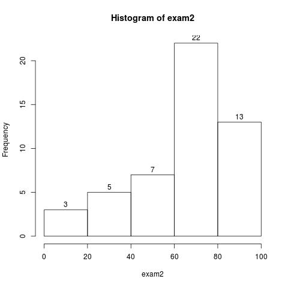
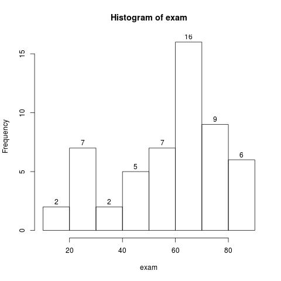

TA & Demo info
Welcome to 360
Name : Xiyu Xie
Office: Sloan 324
Office Hours: Mon, Tue 7:00-8:00 pm
Demo Hours: Wed, Thu 6:00-9:00 pm
Email: xiyu.xie@email.wsu.edu
Phone: (509)-339-3902
Final Demo Schedule
Wednesday, April 29 : 3:00-7:00pm, for Group 1
Thursday, April 30 : 3:00-7:00pm, for Group 2
Check Demo Schedule and Scores for Group Assignment.
Each Demo will be ~10 min, calculate your time slot and solve time conflict with classmates who are willing to change with you.
Demo in teams, choose either time slot assigned to your team members
Also check all your previous lab and homework scores, show me your missing (makeup) labs as soon as possible.
Mid2 Scores
Check Demo Schedule and Scores (sorted by last name).
Also check all your previous lab and homework scores, show me your missing (makeup) labs as soon as possible.

Statistics:
Person: 50
Mean: 66.12 +/- 24.17423
Median: 71
Max: 100
Min: 0
Mid1 Scores
Check Demo Schedule and Scores (sorted by last name).

Statistics:
Person: 54
Mean: 58.12963 +/- 19.59789
Median: 62
Max: 90
Min: 17
Lab Demo Schedule
Check Demo Schedule and Scores (sorted by last name).
Every demo will be ~5min. Calculate your own time.
Solve time conflicts
with your classmate who are willing to change with you.
If neither night in
due week works for you, demo in office hours in that week.